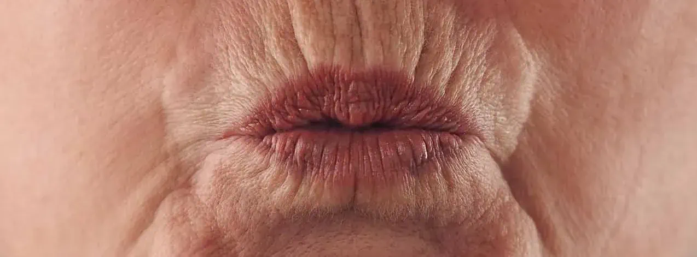
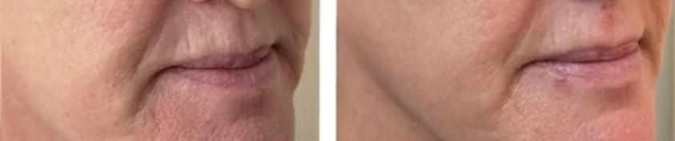

Barcode Wrinkles?
If you are interested in us helping you with this topic:
Book Your Initial Consultation Now!If you are interested in us helping you with this topic:
Book Your Initial Consultation Now!Barcode wrinkles are those fine vertical lines that form above the upper lip. These wrinkles usually appear due to natural skin aging, loss of collagen, and factors such as smoking or sun exposure. At our Aesthetic Center, we offer advanced treatments to soften these lines and restore a rejuvenated and natural look to the lip skin.
At our Aesthetic Center, we offer a variety of personalized treatments to soften barcode wrinkles and improve the overall appearance of the lips. Some of the most recommended are:
Yes, if not treated, barcode wrinkles tend to deepen over time. The skin continues to lose collagen, which causes these lines to become more visible. Treatments like Radiesse or Accent Prime radiofrequency can help prevent wrinkles from becoming more pronounced.
Results vary according to the selected treatment and the individual characteristics of each patient. Generally, you can expect a visible reduction of lines, better texture, and a more youthful appearance. Treatments like Sculptra and Radiesse offer progressive and long-lasting results, while Botox and hyaluronic acid fillers provide immediate effects. At our Aesthetic Center, we design a personalized plan to obtain the best results according to your needs.
